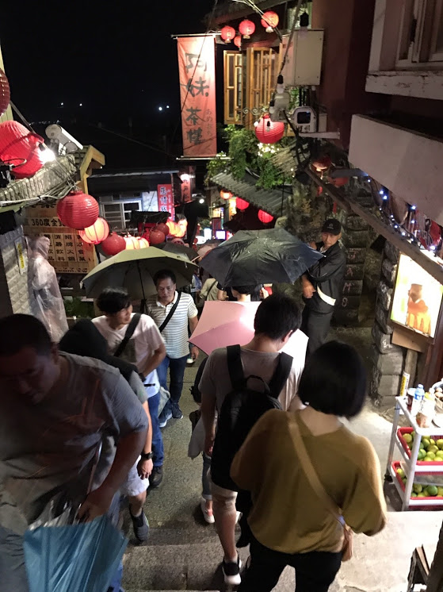

豎崎路是九份最有名的道路之一，也是九份最早的重要交通要路，因九份的地勢是山路，所以主要是由石頭的階梯向上組成，
共有360階，和他的路名一樣向上興築，且與其他重要道路汽車路、輕便路及基山街的路口剛好組成一個『丰』字相連的道，是九份最熱鬧最繁華的地區。
還有無數小巷，使九份充滿神秘感，又替九份增添了不少神秘之處以及吸引人的色彩。
其中，豎崎路中最具代表性的就是街道兩旁的各式茶店和酒坊林立， 早期是九份掏金鼎盛時期最熱鬧的道路，夜晚則是早期採金礦工們下班後昇平歌舞的地方，
各式各樣的茶樓招牌布滿階梯兩旁設滿了茶樓，來此腳步稍歇，可以前往茶藝館品茗賞景，慢慢品嘗這裡當地的滋味和風景。
而在豎崎路階梯底端的右下側，有個低調卻一定要參觀的景點－昇平戲院， 這個戲院建立已經將近100年，也是北台灣第一間，雖曾荒廢過一段時間，但其間有重新整修，如今脫胎換骨重新開放讓大家參觀，但其歷史留下的韻味卻始終難能抹煞。
歷年吸引無數遊客、創作者、攝影前來取景，陡峭的地型造就綿長向上的石頭階梯，在最高點即可一覽無遺九份最純樸的山城意象，
甚至日本動畫大師宮崎駿，也讓豎崎路在電影《神隱少女》中留存。
現在此地，雖然也遺留當時熱鬧的情景及氛圍，但是礦工與淘金客的身影，已經被遊客及觀光客給取代了。
豎崎路的熱鬧繁華，使人在走的同時，也深深的感受到這裡昔日的繁榮氣氛，因此也造就了九份有台灣小上海的稱呼。